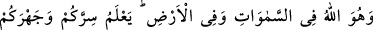
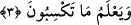

Rivayet olunur ki, Seriy Sakatî’nin huzuruna Ebü’l-Kasım Cüneyd (k.s.) girdiğinde
o ağlıyordu. Ona: “Niçin ağlıyorsun?” diye sordu. O: “Bu gece küçük kızım yanıma
geldi ve dedi ki: “Babacığım bu gece hava çok sıcak, bari bu testiyi şuraya as lazım
olunca içersin.” Seriy şöyle devam etti: “Sonra bana bir ağırlık çöktü ve uyudum.
Rüyamda semadan inen çok güzel bir cariye gördüm. Ona: “Sen kimin içinsin?” dedim.
O: “Ben testilerden soğuk su içmeyen içinim.” dedi. Bunun üzerine uyandım, hemen
testiyi aldım ve yere vurdum.” Cüneyd şöyle dedi: “Onun parçalarını gördüm. Toprağa
karışana kadar onları kaldırmadı.
Onlara bir bak ki nimetleri nasıl terketmişler. Nefislerine bir bardak soğuk su
vermemişler, lezzetli yemekleri yememişlerdir. Hallerini muhâfaza ettikleri süre
karşılığında Allah onlara saatle hesabı mümkün olmayan haller vermiştir. Artık onların
zevklerine nihâyet yoktur.
3. O, göklerde ve yerde tek Allah’tır. Gizlinizi, açığınızı bilir. (Hayır ve şerden) ne
kazanacağınızı da bilir.
“O, göklerde ve yerde” kendisine ibadet edilecek, “mabûd” sıfatına lâyık tek ilah
“Allah’dır.” Bununla birlikte Allah’ın göklerde ve yerde ibadet edilmeye lâyık tek ilâh
olması, O’nun göklerde ve yerde mekan tuttuğu anlamına gelmez. Çünkü O, zamandan ve
mekândan münezzehtir.
Rivayet olunur ki, İmam Gazzâlî’nin hocası İmamü’l-Haremeyn el-Cüveynî,
beldesindeki ileri gelenlerden birinin ziyâfetine gitmişti. Şehrin âlimleri ve önde
gelenleri İmamü’l-Haremeyn’in etrafında toplandılar. İçlerinden biri dedi ki: “Allah
Kur’an’da “O Rahman Arş’a istiva etmiştir (hükmü altına almıştır).” (Taha 20/5)
buyurduğu halde, O’nun mekândan münezzeh olduğunun delili nedir?
İmamü’l-Haremeyn şöyle cevap verdi: O’nun mekândan münezzeh oluşunun delili,
Yunus (a.s.)’ın balığın karnında “Senden başka ilâh yoktur, Seni tesbih ederim, ben
zâlimlerden oldum.” (el-Enbiyâ’, 21/87) demesidir.
Bu cevap, orada bulunanların pek hoşuna gitti. Ev sahibi İmamü’l-Haremeyn’den bunu
biraz daha açıklamasını istedi.
İmam dedi ki: “Burada bin dinar borcu olan fakir biri var. Onun borcunu ödeyiver de,
ben size bu hususu açıklayayım.” Ev sahibi teklifi kabul etti ve adamın borcunu üstlendi.
Bunun üzerine İmamü’l-Haremeyn açıklamalarına şöyle devam etti: Rasûlullah (s.a.)
Mirac gecesi Allah’ın dilediği kadar yüceliklere yükseldiği zaman şöyle buyurdu: